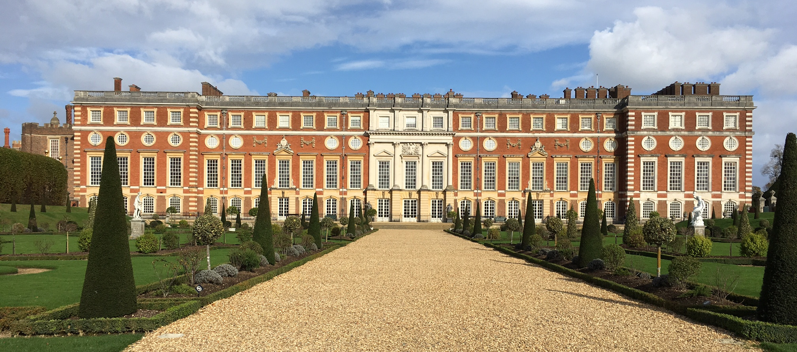

London
London, England - October 23, 2017
Over the weekend I traveled to London with Jillian, a friend I met through Arcadia. We took the Friday evening train from Edinburgh Waverley to London King's Cross and arrived in London around 11:30pm. We decided to take a quick photo at the Platform 9 3/4 sign because there wasn't a queue and we weren't sure if we would have time on Sunday afternoon to do it (we didn't have time, so we chose well). We stayed overnight for Friday and Saturday night at The George Hotel, which was a quaint bed & breakfast near King's Cross and Euston station. It was conveniently located for easy travel around London.
Speaking of travel, I was super worried about navigating public transportation in London (my experience in public transportation only consisted of Edinburgh's bus system) but it was surprisingly easy to figure out. We ended up using an Oyster card for unlimited travel in the city and we used an underground map or Google maps to figure out which routes we needed to take. I had actually planned on Friday afternoon which route we needed to try to make in order to get to certain places on time. We didn't make any horrible mistakes, only one bus choice in the wrong direction that I quickly remedied by hopping off at the next bus stop. I would say Edinburgh successfully made me feel more comfortable navigating public transport.
Our first official touristy stop on Saturday was the Tower of London. We got there a little later than expected, which meant that we missed the tours they have every hour but we instead just explored the Tower on our own. There was a monument where the scaffold used to be (had the names of the celebrities executed there - including Anne Boleyn and Margaret Pole). We also spotted a raven in the courtyard, which was exciting because the Tower houses seven ravens because according to legend, the kingdom and Tower will fall if there are ever less than six ravens enclosed in the Tower grounds at any time. On a more historical, and gruesome note, the Tower of London was where the two sons (Edward & Richard) of Elizabeth Woodville were found dead beneath a staircase centuries after their supposed murder in 1483 by Richard III, who was the brother of Edward IV (Elizabeth's late husband and King before Richard).
To continue with the theme of misery and death, we went to the London Dungeon tour after the Tower of London. The tour was a lot of fun and very interactive. We went through Henry VIII's execution of Anne Boleyn, Jacobite plot with Guy Fawkes in 1605, the Great Plague of 1665, the Great Fire of 1666, Sweeney Todd, and Jack the Ripper. Poor Jillian was the main participant in most of the interactive things, not by request but by being picked by the actors.
After a quick lunch in Trafalgar square, we did some souvenir shopping and classic London photos (even though Big Ben was under construction...) before heading over to Koko, a nightclub in Camden where our music tour was starting from. The music tour was enjoyable, even though I didn't know all the bands that they described. The best part was that we had a tour guide who played the guitar and sang for the whole tour. We saw lots of pubs that were the birthplaces or favorite hangouts of the legends and we went through Camden Market, which was full of cool vintage & handmade stuff. I enjoyed the story around the Sex Pistols, which only made one album before they basically self-destructed.
Because our feet were tired and we were cold, we hopped on a bus for a solid 45 minute ride to Kensington where we got dinner at a place called Sticky Fingers. It's basically a restaurant with classic American food (I had mac 'n cheese, fries, and a milkshake), but it is named after a Rolling Stones album since it is owned by Bill Wyman, a Rolling Stone's bassist.
Sunday was a much calmer day. We spent the morning at Hampton Court Palace, which is actually decently far outside of London (further west than Wimbledon). The palace was GORGEOUS and I really enjoyed the audio tour (albeit not as crazy as Holyrood). There are two parts of the palace: Henry VIII's original part and the part added by William of Orange. We toured Henry's apartment, William's apartments, and the kitchens, all of which were magnificent and overwhelming. I won't go into too much detail (I could probably write a book about all the cool things I learned) but I will confess that my inner history nerd was fawning over the original paintings in Henry's apartments that I had seen before online or in books but was finally able to see in person. I was definitely nerding out the whole time.
All in all, London was a fun, enlightening, and gorgeous trip that, other than random bouts of rain and lots of wind, was great weather. I feel quite fulfilled for finally being able to say that I've seen Hampton Court Palace, a staple location in Philippa Gregory's books on the Tudors.
Cheers!
- Caileigh Marshall